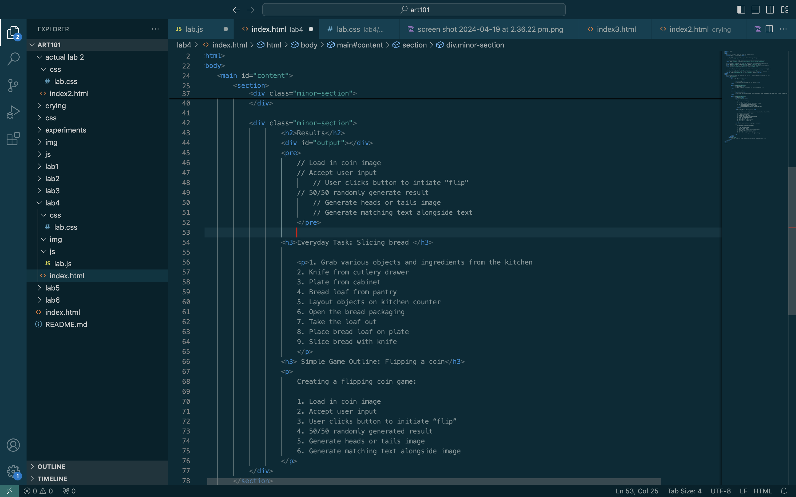

Lab 4 - Pseudocoding
Challenge
The purpose of this lab was to understand the process of pseudocoding the taking into account the necessary steps to make a game/program.
Problems
I struggled with uploading my image to the site and uploading the site to GitHub.
Reflection
This assignment was much simplier than the previous lab for me however, I somehow still have no idea how to upload my individual lab sites to my GitHub. I will inquire in-person about this during either my section or after lecture.
Results
// Load in coin image // Accept user input // User clicks button to intiate "flip" // 50/50 randomly generate result // Generate heads or tails image // Generate matching text alongside text
Everyday Task: Slicing bread
1. Grab various objects and ingredients from the kitchen 2. Knife from cutlery drawer 3. Plate from cabinet 4. Bread loaf from pantry 5. Layout objects on kitchen counter 6. Open the bread packaging 7. Take the loaf out 8. Place bread loaf on plate 9. Slice bread with knife
Simple Game Outline: Flipping a coin
1. Load in coin image 2. Accept user input 3. User clicks button to initiate “flip” 4. 50/50 randomly generated result 5. Generate heads or tails image 6. Generate matching text alongside image
